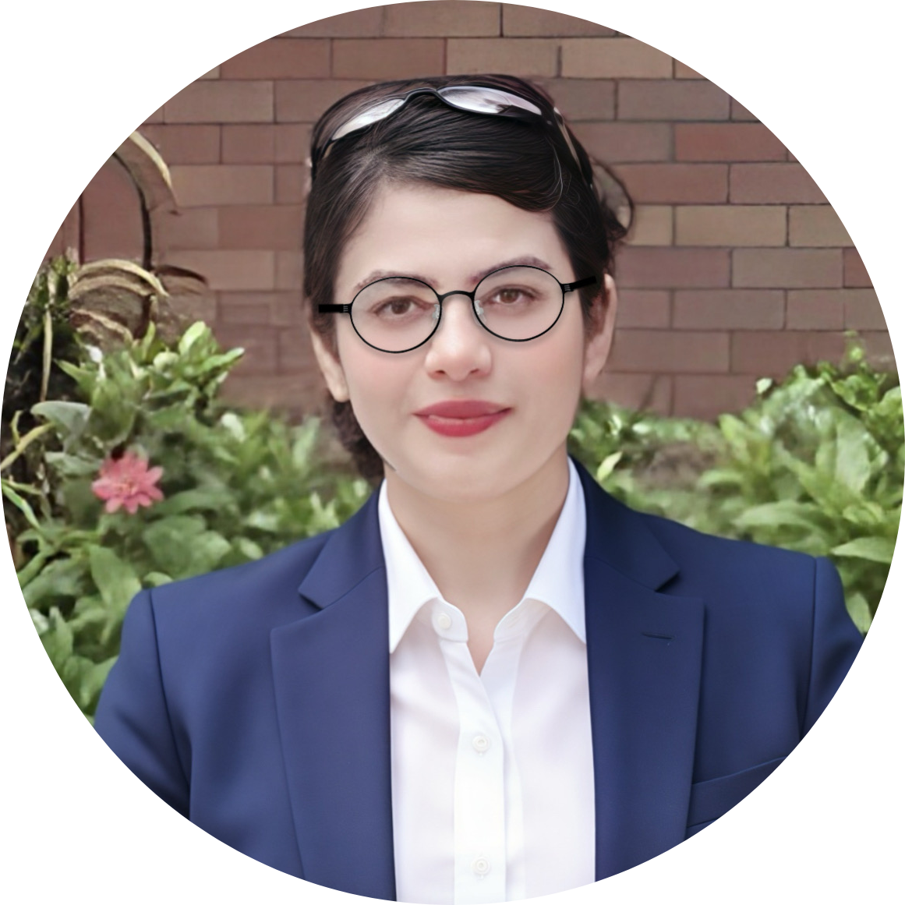

Dr. Afia Mirza
Senior Consultant Opthalmologist, India
This workshop explores how AI, IoT, and embedded systems are transforming medical education and healthcare training, aligning with ICWL-SETE’s focus on educational technology. Key topics include AI-driven adaptive learning and assessment systems, IoT-enabled medical simulators, immersive remote training environments, and real-time analytics for personalized feedback. The integration of communication protocols such as MQTT and LoRaWAN, sensor-based data collection, and mobile robotics are examined as means to create scalable, engaging, and effective educational tools. The workshop aims to foster discussions on designing intelligent, data-driven learning environments that address challenges in remote healthcare education, assessment, and personalization.
The rapid advancement of AI and IoT offers unprecedented opportunities to revolutionize medical education, assessment, and personalized learning. This workshop aligns with ICWL-SETE’s mission by demonstrating how intelligent tutoring systems, scalable remote training platforms, and immersive simulation environments can enhance learning outcomes and engagement. The integration of sensor networks and communication protocols enables real-time data collection and adaptive feedback, crucial for modern medical training. The workshop aims to bring together researchers, educators, and industry practitioners to explore innovative, scalable, and personalized educational solutions rooted in emerging AI and IoT technologies.
We invite researchers, educators, practitioners, and industry experts to submit original papers to the ICWL-SETE 2025 workshop. The focus is on latest advances, challenges, and future directions in AI, IoT, and AIoT-driven personalized learning, including intelligent tutoring systems, adaptive platforms, learner modeling, and more.
Technical areas of this special session include, but are not limited to:
While these topics provide a broad overview of current interests, we welcome submissions that explore innovative ideas, emerging technologies, and interdisciplinary approaches. The scope is intentionally flexible to accommodate the rapid evolution of AI and IoT in medical education. We encourage proposals that push the boundaries of existing knowledge, address new challenges, or propose novel solutions that may not yet be widely explored but hold significant potential for transforming healthcare training in the digital age.
Paper submission system is available at: EasyChair (TBA). Prospective authors are invited to submit original papers reporting on research results, experimentations or novel applications related to the workshop topic
Participants are invited to submit papers of 6-8 pages, or position statements of 2-4 pages, formatted according to IEEE templates (download templates).
Submissions will undergo peer review by experts, focusing on originality, relevance, and clarity. Accepted papers will be published in the ICWL-2025 proceedings.
All submissions will undergo double-blind peer review conducted by an international Program Committee, ensuring transparency and conflict-of-interest management in line with ICWL-SETE standards.
TBA
TBA
"Dr. Afia Mirza"(MBBS, MD (Ophthalmology), Fellow (Medical Retina)), Practicing Ophthalmologist and Retina Specialist, India
Dr. Afia MIRZA is a highly skilled ophthalmologist currently practicing as a private practitioner. She served as a Consultant Comprehensive Ophthalmologist at Sree Nethralaya Eye Hospital, Hyderabad, since July 2020. With extensive clinical and surgical expertise, she has previously worked at Netrajyoti Eye Hospital in West Bengal, Lions NAB Eye Hospital in Maharashtra, and Swarup Eye Centre in Hyderabad. She also gained valuable experience as a Visiting Phaco Surgeon at Aditya Hospitals in Maharashtra. Dr. Mirza completed a fellowship in Medical Retina, enhancing her specialization. Her surgical portfolio includes performing over 400 small incision cataract surgeries, more than 100 phacoemulsification procedures, and numerous pterygium excisions and dacryocystectomies. She actively contributes to academia by conducting seminars and training postgraduate and undergraduate students. Her academic foundation includes an MS in Ophthalmology from Osmania Medical College and an MBBS from Bhaskar Medical College, with numerous awards such as the G. Hanumantha Rao Memorial Gold Medal for top marks in Anatomy and multiple distinctions in her undergraduate studies. Her research includes studies on dietary sodium restriction's effect on diabetes and clinical profiles of anterior uveitis, with publications in reputed journals. Fluent in English, Hindi, Marathi, Telugu, and Urdu, she combines excellent leadership, communication, and organizational skills, making her a well-rounded ophthalmologist dedicated to advancing eye care through clinical excellence and academic involvement.
Full-day
Dr. Afia Mirza
Senior Consultant Opthalmologist, India
Prof. Shuai LI, University of Oulu, Finland
Prof. Rama Murthy GARIMELLA, Mahindra University, India

Dr. Boqi WU, Jilin Jianzhu University, China
Henry CHAN, The Hong Kong Polytechnic University